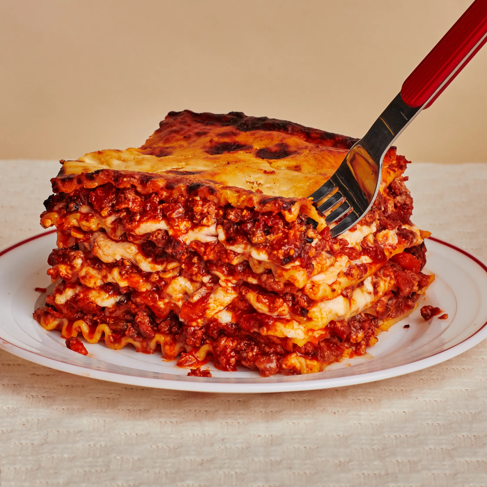

Lasagna alla Nonna

This might be the best lasagna you ever make
Ragu Bolognese
- 2 lb. ground pork
- 1 lb. ground beef chuck (20% fat)
- Kosher salt, freshly ground black pepper
- 2 tbsp extra-virgin olive oil
- 2 oz. pancetta, cubed
- 1 medium onion, finely diced
- 1 celery stalk, finely diced
- 1 medium carrot, peeled, finely diced
- 6 garlic cloves, sliced
- 2 tbsp tomato paste
- 3/4 cup dry white wine
- 1 28-oz. can whole peeled tomatoes
- 1 cup low-sodium chicken broth
- 1 cup whole milk
Bechamel and assembly
- 7 tbsp unsalted butter
- 1/4 cup plus 3 tbsp all-purpose flour
- 6 cups whole milk
- 4 oz. parmesan cheese, coarsely grated
- Pinch cayenne pepper
- Pinch ground nutmeg
- Kosher salt, freshly ground black pepper
- 1 1/4 lb. dried lasagna noodles
- Extra-virgin olive oil
Method
- Preheat oven to 225°. Mix 2 lb. ground pork and 1 lb. ground beef chuck (20% fat) with your hands in a large bowl; season generously with kosher salt and freshly ground black pepper, then mix again. Form into about 18 large meatballs (they don’t need to be perfect—you’ll be mashing them later).
- Warm 2 Tbsp. extra-virgin olive oil in a large Dutch oven or other heavy pot over medium-high heat. Working in 2 batches, cook meatballs, turning occasionally and reducing heat if bottom of pot looks in danger of scorching, until browned all over, about 6 minutes per batch. Transfer to a rimmed baking sheet as they’re done.
- Reduce heat to medium. Add 2 oz. pancetta, chopped, to pot and cook, stirring often, until lightly browned and beginning to crisp, about 5 minutes. Add 1 medium onion, finely chopped, 1 celery stalk, finely chopped, 1 medium carrot, peeled, finely chopped, and 6 garlic cloves, sliced, and cook, stirring occasionally, until vegetables are softened, 6–8 minutes. Add 2 Tbsp. tomato paste and cook, stirring constantly, until paste is darkened in color, about 2 minutes.
- Add ¾ cup dry white wine and cook, stirring occasionally, until almost completely evaporated, about 5 minutes. Add 28-oz. can whole peeled tomatoes, crushing with your hands, and increase heat to medium-high. Cook, stirring occasionally, until liquid is jammy and reduced by about half, 8–10 minutes. Add 1 cup low-sodium chicken broth and 1 cup whole milk, then return meatballs to pot. Bring to a simmer. Cover pot partially with a lid, transfer to oven, and cook, checking every hour or so to ensure liquid is at a low simmer and adjusting oven temperature as needed, until meatballs are falling-apart tender, 3–4 hours.
- Using a potato masher, break meatballs apart and incorporate into liquid (you should have about 8 cups ragù; transfer pot to stovetop and simmer gently to reduce if needed). Taste and season with more salt and black pepper if needed.
- Melt 7 Tbsp. unsalted butter in a large saucepan over medium heat. Whisk in ¼ cup plus 3 Tbsp. all-purpose flour and cook, whisking occasionally, until mixture smells slightly nutty, about 4 minutes. Quickly whisk in 6 cups whole milk, then increase heat to medium-high and bring to a simmer, whisking constantly. Reduce heat to maintain a simmer and cook, whisking occasionally, until béchamel thickens, about 4 minutes. Continue to cook, whisking occasionally and adjusting heat as needed to maintain a gentle simmer, until béchamel is smooth and velvety, 8–10 minutes more. Remove from heat and whisk in 4 oz. Parmesan cheese, coarsely grated, pinch of cayenne pepper, and pinch of ground nutmeg. (You should have about 6 cups béchamel.) Season with kosher salt and freshly ground black pepper. Transfer to a large bowl and press plastic wrap directly onto surface; let cool slightly.
- Preheat oven to 325°. Cook 1¼ lb. dried lasagna noodles in a large pot of boiling salted water, stirring occasionally and separating them so they don’t stick together, until just starting to soften but still snap in half rather than bend when folded; 3 minutes is the magic number. The noodles will be so firm it will just seem all wrong, but this is what separates al dente lasagna layers from gummy ones. Using tongs, transfer noodles to a large bowl of cold water to cool. Drain and lie flat in a single layer on a rimmed baking sheet, separated by parchment or wax paper.
- Lightly coat a 13x9" glass or ceramic baking dish with extra-virgin olive oil. Spread 1½ cups ragù in dish. Lay a single layer of noodles over ragù (you will need to cut some noodles in half in order to fill all gaps). Spoon 1¼ cups béchamel over noodles, spreading in an even layer with a small offset spatula. Top béchamel with 1½ cups of meat sauce. Starting with another layer of noodles, repeat process, creating 5 layers of pasta (or 6, depending on how deep your pan is) in total and ending with remaining 1 cup béchamel. Lasagna should come right to the top edge of dish.
- Cover with a lightly oiled piece of aluminum foil and set lasagna pan on a rimmed baking sheet (just to catch drips). Bake lasagna until bubbling gently around the edges, about 1 hour. Remove from oven. Increase oven temperature to 425° and carefully place rack in top of oven. Remove foil from lasagna and continue to bake until top is browned and crisp around the edges, 10–15 minutes longer. Let sit 10 minutes before serving.